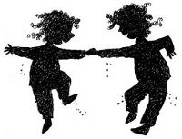

8 Ağustos 1928
Bahçedeki ulu erguvanın üzerindeki kırmızı gagalı, akıllı saka kuşu aşağıdaki sahneyi gördüğünde çok şaşırdı: Odaya küçük bir kız girdi, ardından aynısından bir tane daha. Saka hayretle kapıya baktı, bir tane daha girecek mi diye. Neyse ki girmedi. Kıvır kıvır saçlı, badem burunlu iki kız yatağa atladıkları gibi yorganı gıdıklamaya, zıp zıp zıplamaya başladılar. Yorganın altında her kim varsa kıpırdandı, kıvrıldı. Sonunda yorganın altından sarı-kumral arası saçlarıyla, mavi gözleriyle gülümseyen bir yüz çıktı. Küçük saka, yorganın altından aynısından bir tane daha çıkmasını bekledi, çıkmayınca gülümseyerek uçtu.

Erim, küçük kızları yakaladı:
— Sabahın bu saatinde ne bu Allah aşkına, rüyanızda mı gördünüz beni?
— Bugün Nisan Abla gelecek, seni uyandıralım, hazırlanalım dedik abi.
— Daha horozlar ötmedi. Nisan saat on gibi gelecek.
— Olsun kalk, biz hazır olalım.
Erim iki kardeşini de yanaklarından öptü, gıdıkladı, kıkırdayıp şakalaştılar. Sonra herkes hazırlandı ve mis gibi kokan mutfağa indi.
Babaanneleri çayı demlemiş onları bekliyordu. Her sabah olduğu gibi ikizler, Sanem ve Simin, birer yanından sarıldılar, Erim de ortadan, dördü bir yumak oldular, ardından da güle oynaşa kahvaltılarını yaptılar.
Müzeyyen Babaanne, “Nasıl, heyecanlı mısınız?” diye sordu. “Eveeet” diye bağırdı ikizler. Erim ve Müzeyyen Babaanne güldüler.
— Biliyorsunuz, Nisan, ünlü Arkeolog ve Ressam Osman Hamdi Efendi’nin torunu. Burada olması büyük şans, belki biraz resim çalışırsınız.
— Hayııır, biz oyun oynayacağız onunla.
— Peki, oynayın durun sizi gidi cimcimeler sizi.
Saatler geçmek bilmedi, üçü de heyecanla Nisan’ın gelmesini bekledi. Köşkün dışında at arabasının sesi duyulduğunda ikizler kapıya koştular: “Nisoooş Ablaaa” çığlıkları atarak heyecanla sarıldılar. Nisan, on iki yaşında, siyah renkteki düz uzun saçını atkuyruğu yapmış, güler yüzlü, tatlı bir kızdı. Müzeyyen Ninesi’nin elini öptü, sonra da Erim’e sarıldı.
— Karnın aç mı kızım?
— Hemen beslemeye başlayacak mısın beni Müzeyyen Nine? Eve tombul bir kuzu olarak mı döneceğim? Sağ olun, çok tokum.
Hepsi güldüler. O sırada sokaktan gelen gürültüleri duyup bahçe kapısına doğru döndüler ve bahçe kapısının önünde olabilecek en garip sahnelerden birini gördüler: Bir bisikletin üstünde orta yaşlı bir adam, arkasından da onlarca çocuk bağrış çağrış koşturuyor. Bisiklete binmesi gerekenler koşuyor, kocaman adam ise bisikletin üzerinde!